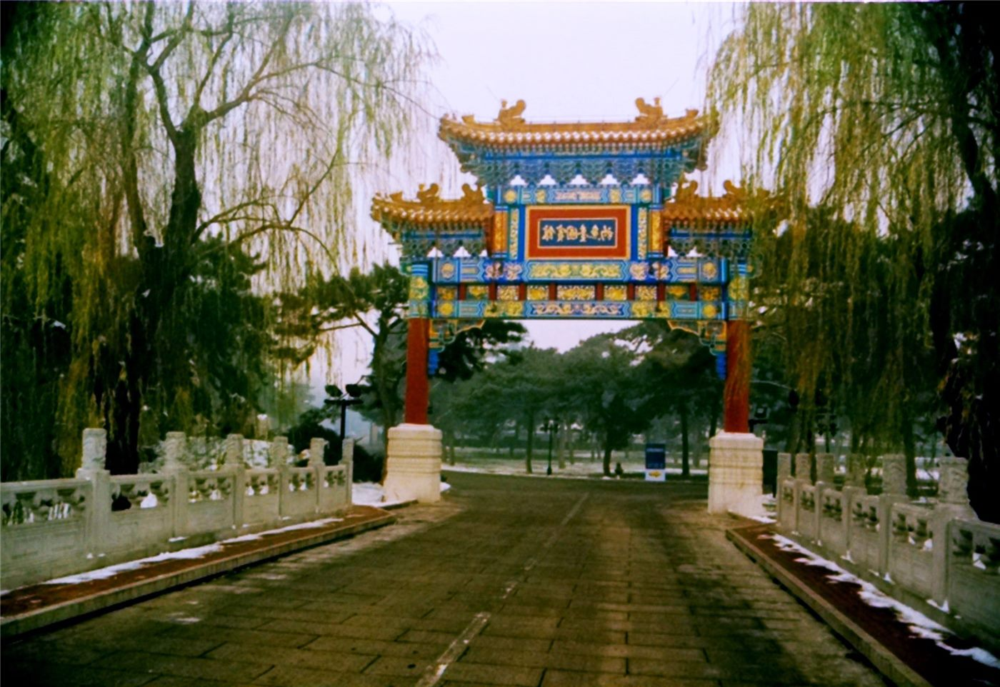

橋헤드라인
사진=Wikimedia Commons (자유 라이선스) · 기사 주제 관련 이미지
헤드라인‘북방의 왕’ 앤디 버넘, 오늘 영국 총리 취임… 10년 새 일곱 번째 총리
노동당 새 대표로 선출된 앤디 버넘이 7월 20일 찰스 3세 국왕의 임명을 받아 키어 스타머의 뒤를 이어 영국 총리에 오른다. 대(大)맨체스터 시장 출신의 지방 정치인이 총리 관저로 직행하는 이례적 경로다.
손기요 기자 · 2026.07.20
노동당 새 대표로 선출된 앤디 버넘이 7월 20일 찰스 3세 국왕의 임명을 받아 키어 스타머의 뒤를 이어 영국 총리에 오른다. 대(大)맨체스터 시장 출신의 지방 정치인이 총리 관저로 직행하는 이례적 경로다.

코스닥 지수가 장중 4% 넘게 떨어지며 매도 사이드카가 발동됐다. 중동 지정학 리스크와 국제유가 급등이 위험자산 회피 심리를 키웠다.

삼성바이오로직스가 스위스의 펩타이드 전문 기업을 약 2조7,000억 원에 인수한다. 급성장하는 비만치료제 위탁생산 시장에 본격 진입하려는 포석이다.

유네스코 세계유산위원회가 한국에서 처음으로 부산에서 열렸다. 회의는 국제 협력을 강조한 ‘부산 선언’을 채택하며 막을 내렸다.
중국이 자체 개발한 여객기의 해외 시장 진출에 속도를 내고 있다. 잇단 인증·수주 진전을 발판으로 ‘하늘길 수출’의 외연을 넓히는 모습이다.

한정 중국 국가부주석이 미·중 고위급 2차대화(트랙2)에 참석한 미국 대표단을 만났다. 양측은 소통 채널을 유지하는 것이 중요하다는 데 뜻을 같이했다.

중국산 에너지저장 배터리가 세계 시장의 약 90%를 차지한다는 분석이 나왔다. 인공지능 확산과 재생에너지 전환이 저장장치 수요를 끌어올리고 있다.

대만 가권지수가 장중 1,300포인트가 넘는 큰 폭의 등락을 보였다. 신용융자 유지율이 147%까지 떨어지며 1년 만에 최저를 기록했다.

TSMC의 황런자오 최고재무책임자가 미국 투자를 늘리는 두 가지 이유를 설명했다. 내년부터 외국인 주주에게 미국 달러로 배당을 지급할 계획도 밝혔다.

대만에서 안전성 논란이 인 식용유를 둘러싼 파문이 커지고 있다. 천젠런 전 부총통은 “내려야 할 제품은 내려야 한다”며 중앙·지방의 협력 강화를 촉구했다.

미군이 이란을 겨냥한 공습을 여러 날 이어 가고 있다. 트럼프 미국 대통령은 작전 중 전사한 미군 3명을 기린다고 밝혔다.

리오넬 메시가 이끈 아르헨티나가 결승에서 스페인에 막혀 유효슈팅 없이 패했다. 노장의 마지막 월드컵 무대는 아쉬운 결말로 끝났다.

캄보디아가 대만 여권 소지자에 대한 입국 편의조치를 중단했다. 캄보디아 측은 “대만을 시종 중국의 한 성으로 본다”고 밝혔다.


국제유가가 미·이란 충돌 격화 속에 급등했다. 브렌트유는 한때 배럴당 80달러대로 뛰며 하루 9%대 상승을 보였다.
애플이 대만에서도 음악 스트리밍 구독료를 올렸다. 여러 서비스를 묶은 ‘애플 원’ 요금 조정 여부에도 이용자들의 관심이 쏠렸다.

한국의 여러 도시가 참여하는 야간 관광 축제 ‘대한민국 밤밤 페스타’가 열린다. 10개 도시의 밤 문화를 하나의 여행 코스로 엮는 기획이다.

한 달 사이 양식장에서 해삼 1t 이상을 훔친 조직범죄 일당이 검찰에 넘겨졌다. 수산물 절도가 조직적으로 이뤄진 정황이 드러났다.

한국에서 도박 관련 신고·상담이 한 달 사이 74% 늘었다. 성인의 빚투와 청소년 도박이 함께 늘며 사회적 경각심이 커지고 있다.

제주에서 주말 물놀이 도중 1명이 숨지고, 해파리에 쏘인 피해도 잇따랐다. 본격 피서철을 앞두고 수상 안전에 주의가 요구된다.